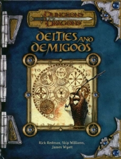

“Deities and Demigods” on the
Shelf of Many Books

Deities and Demigods
D&D 3.0
(3e)
Year
: 2002 (February)
Deities and Demigods
on Amazon
Deities and Demigods
on Amazon
Deities and Demigods
on TSR Info
Known monsters from the book:
Dwarf Einherjar
Einherjar
Faun
Greater Cyclops
Greater Mummy
Human Einherjar
Jotunheim Frost Giant
Lesser Cyclops
Minion of Set
Muspelheim Fire Giant
Valkyrie
Valkyries’ Mount
Xag-Ya